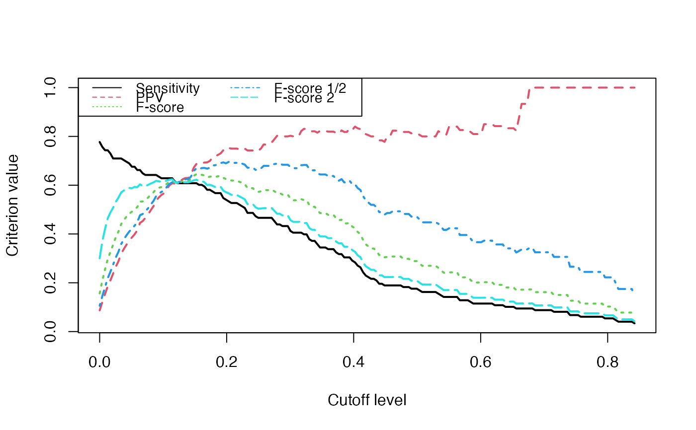

compare-methods.RdAllows comparison between actual and inferred network.
signature(Net = "network", Net_inf = "network", nv = "numeric")A network object containing the actual network.
A network object containing the inferred network.
A number that indicates at which level of cutoff the comparison should be done.
A vector containing : sensitivity, predictive positive value, the usual F-score (2*ppv*sens/(sppvpe+sens)), the 1/2 ponderated Fscore ((1+0.5^2)*ppv*sens/(ppv/4+sens)) and the 2 ponderated Fscore ((1+2^2)*ppv*sens/(ppv*4+sens)).
data(simul) #Comparing true and inferred networks Crit_values=NULL #Here are the cutoff level tested test.seq<-seq(0,max(abs(Net_inf_PL@network*0.9)),length.out=200) for(u in test.seq){ Crit_values<-rbind(Crit_values,Patterns::compare(Net,Net_inf_PL,u)) } matplot(test.seq,Crit_values,type="l",ylab="Criterion value",xlab="Cutoff level",lwd=2)